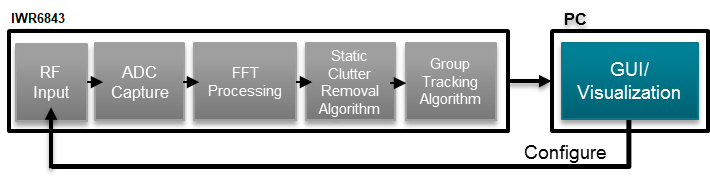

# Overview
This lab demonstrates the use of TI mmWave sensors to track and count moving and stationary people while monitoring breating rate and heart rate using the IWR6843AOPEVM sensor module.
Detection and tracking algorithms run onboard the IWR6843 mmWave sensor and are used to localize people and track their movement. Vital sign measurment alogrithms use the position data of the tracking to measure the vital sign info of the tracked person.
<video width="640" height="360" autoplay loop controls>
<source src="images/Vital_signs_test_video.mp4" type="video/mp4">
3D people counting plus vital signs demo video
</video>
[[b! Note: No Source Code Provided
This lab is provided as a binary file without source code. This can be used to test the application in various different use cases. For more information on the source code and implementation, please reach out to your local TI sales representative.
]]
In this demonstration, localization and tracking is performed upon any moving object in the scene and the people or objects will continue being tracked until they leave the scene. This will even continue tracking people as they sit or lie down and remain stationary.
The vital sign measurements will only be accurate when the tracked person stops moving for at least 20 seconds. The person should be seated or lying down with the sensor pointed toward their chest, up to a 5m distance.
With the 3D people counting and vital sign software running on the IWR6843 chip, the mmWave sensor module outputs a data stream consisting of 3 dimensional point cloud information and a list of tracked objects which can be visualized using the PC based visualizer included in the toolbox.
This user guide covers the procedures to Flash, Run, and Compile the 3D people counting demo. For details regarding the demo software algorithms and implementation, please refer to the following documents available in the [People Counting Lab docs directory](../../../People_Counting/people_counting_landing.html). Details specific to the vital sign measurement will be discussed later in this document.
* [3D People Counting Demo Software Implementation Guide](../../../People_Counting/docs/3D_people_counting_demo_implementation_guide.pdf)
* [Group Tracker Algorithm Implementation Guide](../../../People_Counting/docs/Tracking_radar_targets_with_multiple_reflection_points.pdf)

[[r! AoP ES2.0 EVM, Rev F or later only
The IWR6843 AoP version of this lab is only compatible with ES2.0 silicon and the corresponding EVM. Please ensure your EVM is the same as in the below image.
]]
# Quickstart
## Prerequisites
[[y! Run Out of Box Demo
Before continuing with this lab, users should first run the out of box demo for the EVM.
This will enable users to gain familiarity with the sensor's capabilities as well as the various tools used across all labs in the mmWave Industrial Toolbox.
]]
[[r! Latest XDS110 firmware required
The XDS110 Firmware runs on the microcontroler onboard the MMWAVEICBOOST Carrier Card which provides the JTAG Emulation and serial port communication over the XDS110 USB port. We have observed packet loss on the serial port (COM ports) with some versions of the XDS110 firmware which can cause the demo to fail.
The latest XDS110 firmware is installed with the latest version of Code Composer Studio. CCS version 10.1 or later required.
]]
[[y! Sufficient PC CPU and GPU resources required
The visualizer requires sufficient GPU and CPU resources to process the incoming UART data every frame and run the demo smoothly. Users with insufficent PC resources may notice occasional visualizer lag
or missed frames in the log file. The demo should still run on most PCs regardless of hardware resources, but performance might be slightly different.
]]
## 1. Hardware and Software Requirements
### Hardware
Item | Details
--------------------------|-----------------
Device | [IWR6843AOP](http://www.ti.com/tool/IWR6843AOPEVM) optionally with [Industrial mmWave Carrier Board](http://www.ti.com/tool/MMWAVEICBOOST).
Mounting Hardware | The EVM needs to be mounted at a height of ~1 - 1.5 to face a seated person, or it can be mounted on the ceiling pointed down to face a sleeping person. An [adjustable clamp style smartphone adapter mount for tripods](https://www.amazon.com/Vastar-Universal-Smartphone-Horizontal-Adjustable/dp/B01L3B5PBI/) and a [60-75" tripod](https://www.amazon.com/Neewer-Portable-centimeters-Camcorder-kilograms/dp/B01N6JCW8F/) can be used to clamp and elevate the EVM. This is only an example solution for mounting; other methods can be used so far as setup specifications are met.
Computer | PC with Windows 7 or 10. If a laptop is used, please use the 'High Performance' power plan in Windows.
Micro USB Cable | Due to the high mounting height of the EVM, an 8ft+ cable or USB extension cable is recommended.
Power Supply | 5V, >3.0A with 2.1-mm barrel jack (center positive). The power supply can be wall adapter style or a battery pack with a USB to barrel jack cable. If using a standalone EVM a powered USB hub may be needed.
### Software
Tool | Version | Download Link
----------------------------|---------------------------|--------
TI mmWave SDK | 3.5.x.x | [Link to Latest mmWave SDK](http://software-dl.ti.com/ra-processors/esd/MMWAVE-SDK/latest/index_FDS.html). To access a previous version of the mmWave SDK scroll to the bottom of the table and click the link under "MMWAVE-SDK previous release". Repeat to continue stepping back to previous versions.
mmWave Industrial Toolbox | Latest | Download and install the toolbox. Go to [Using TI Resource Explorer & the mmWave Industrial Toolbox](../../../../docs/readme.html) for instructions.
Uniflash | Latest | Uniflash tool is used for flashing TI mmWave Radar devices. [Download offline tool](http://www.ti.com/tool/UNIFLASH) or use the [Cloud version](https://dev.ti.com/uniflash/#!/)
## 2. Flash the EVM
1. Set the device in flashing mode:
a. If using ISK standalone module, follow the instructions for [setting Modular EVM to flashing mode](../../../../docs/hardware_guides/evm_setup_operational_modes.html)
b. If using ISK with ICBOOST, follow the instructions for [Hardware Setup of ICB for Flashing Mode](../../../../docs/hardware_guides/evm_setup_operational_modes.html)
2. Follow the instruction to [Flash the mmWave Device](../../../../docs/software_guides/using_uniflash_with_mmwave.html)
Image | Location
--------------------------|------------
Whole demo binary | `<mmwave_industrial_toolbox_install_dir>\labs\Vital_Signs\3D_People_Counting_with_Vital_Signs\prebuilt_binaries\Vital_Sign_3D_people_count_68xx_demo.bin`
## 3. Physical Setup
1. Setup the device for functional mode
a. If using EVM standalone, follow the instructions for [setting Modular EVM to functional mode](../../../../docs/hardware_guides/evm_setup_operational_modes.html)
b. If using the ICBOOST, follow the instructions for [Hardware Setup of ICB for Functional Mode](../../../../docs/hardware_guides/evm_setup_operational_modes.html)
**Setup Requirements:**
* Elevate EVM: 1 - 1.5m high
* Down tilt: ~0-15 degree
## 4. Run the Lab
To run the lab, launch and configure the visualizer which displays the detection and tracked object data received via UART. See the [instructions in the visualizer folder](../../../People_Counting/visualizer/docs/people_counting_visualizer_user_guide.html). The visualizer that should be used for this lab is Vital_Signs_GUI.exe. Choose the 'Vital Signs' option for config type when connection to the COM ports.
Please ensure you use the default chirp for your device:
* AOP: AOP_6m_default_vital_signs.cfg
[[y! Device must be restarted before sending a new configuration.
]]
Chirp Parameter (Units) | Value
-------------------------|------------
Start Frequency (GHz) | 60.75
Slope (MHz/us) | 200
Samples per chirp | 96
Chirps per frame | 288
Frame duration (ms) | 80
Sampling rate (Msps) | 10.785
Bandwidth (MHz) | 1780
Range resolution (m) | 0.084
Max Unambiguous Range (m)| 7.2
Max Radial Velocity (m/s)| 8.38
Velocity resolution (m/s)| 0.17
Azimuth resolution (deg) | 14.5
Elevation resolution (deg) | 58
Number of Rx | 4
Number of Tx | 3
# Developer's Guide
This lab is provided as a binary file without source code. This can be used to test the application in various different use cases. For more information on the source code and implementation, please reach out to your local TI sales representative.
## Modifying Configuration File
The configuration files included a set of commands which are used to specify the scene boundaries (i.e. area of interest) in relation to the sensor position and may need to be modified accordingly. These commands and their respective parameters are listed below. All values are in world coordinates, so they are all relative to the position of the sensor listed in sensorPosition.
* staticBoundaryBox [-X] [X] [NearY] [FarY] [-Z] [Z]
* This sets boundaries where static points can be used by the tracker and tracks are allowed to become static. Each value denotes an edge of the 3D cube. Currently, it is recommend to keep NearY greater than or equal to 2.
* boundaryBox [-X] [X] [NearY] [FarY] [-Z] [Z]
* This sets boundaries where tracks can exists. Only points inside the box will be used by the tracker. Each value denotes an edge of the 3D cube.
* presenceBoundaryBox [-X] [X] [NearY] [FarY] [-Z] [Z]
* The demo supports early presence detection if a pre-configured number of points are detected in the boundary box defined by presenceBoundaryBox. The points also have to meet a pre-defined velocity threshold which is modeled after typical human walking motion. Early presence detection could be useful in applications such as smart lighting, where it may be desirable to turn on the lights as soon as human presence is detected in the area, even before tracks could be allocated.
<img src='images/evm_orientation.png' width="600"/>
* sensorPosition [Z] [AzimuthTilt] [ElevationTilt]
* Z - height of sensor.
* AzimuthTilt - horizontal rotation of sensor with respect to the back wall, as represented by FarY.
* ElevationTilt - vertical rotation of the sensor with respect the the ground.
## Customization
For detailed description of the configuration parameters and recommendations related to tuning the parameters, please refer to the following documents available in the docs folder of the People Counting lab directory
* [3D People Counting Demo Detection Layer Tuning Guide](../../../People_Counting/docs/3D_people_counting_detection_layer_tuning_guide.pdf)
* [3D People Counting Demo Tracker Layer Tuning Guide](../../../People_Counting/docs/3D_people_counting_tracker_layer_tuning_guide.pdf)
The vital sign measurment accepts two additional commands beyond what is included in the above documents. These configuration inputs allow the algorithm to select a fixed or vartiable measurement range, and set the update rate for vital measurments. The below commands should be included in the configuration file.
> vitalsign 15 300
>
> VSRangeIdxCfg 0 21
Command | Param 1 | Param 2
--------|---------|----------
vitalsign | *Refresh frame count* <br/><br/> Number of frames before the vital sign data is output on the UART line. Increase for more stable data, decrease for a faster refresh <br/><br/> **Default: 15** | *Window size* <br/><br/> Debug setting, do not change <br/><br/> Set to 300
VSRangeIdxCfg | *VSRangeIdxCfg_EN* <br/><br/> Fixed range ENABLE <br/><br/> **Set to 1:** Enables fixed range mode. Uses range bin from Param 2 to fix the area to look for vital signs <br/><br/> **Set to 0:** Disables fixed range mode. Uses tracker position to set the area to monitor vital signs | *VS_Range_Idx_Number* <br/><br/> Range bin for vital signs (if enabled by param 1) <br/><br/> If *VSRangeIdxCfg_EN* = 1, this value sets the range for the vital signs processing. <br/><br/> Range = Range_bin\*resolution <br/><br/> For the default profile, range resolution is 8.4cm <br/><br/>**Example:** Set to 20 to focus vital sign tracking around 1.68m
## UART Output Data Format
The demo outputs the point cloud and tracking information using a TLV(type-length-value) encoding scheme with little endian byte order. For every frame, a packet is sent consisting of a fixed sized **Frame Header** and then a variable number of TLVs depending on what was detected in that scene. The TLVs can be of types representing the 3D point cloud, target list object, and associated points.
### Frame Header
Size: 48 bytes
```Matlab
frameHeaderStructType = struct(...
'sync', {'uint64', 8}, ... % syncPattern in hex is: '02 01 04 03 06 05 08 07'
'version', {'uint32', 4}, ... % 0xA6843
'totalPacketLen', {'uint32', 4}, ... % See description below
'platform', {'uint32', 4}, ... % 600MHz free running clocks
'frameNumber', {'uint32', 4}, ... % In bytes, including header
'subFrameNumber', {'uint32', 4}, ... % Starting from 1
'chirpProcessingMargin', {'uint32', 4}, ... % Chirp Processing margin, in ms
'frameProcessingMargin', {'uint32', 4}, ... % Frame Processing margin, in ms
'trackProcessTime', {'uint32', 4}, ... % Tracking Processing time, in ms
'uartSentTime' , {'uint32', 4}, ... % Time spent to send data, in ms
'numTLVs' , {'uint16', 2}, ... % Number of TLVs in thins frame
'checksum', {'uint16', 2}); % Header checksum
```**Frame Header Structure: name, type, length**
```Matlab
% Input: frameheader is a 48x1 double array, each index represents a byte of the frame header
% Output: CS is checksum indicator. If CS is 0, checksum is valid.
function CS = validateChecksum(frameheader)
h = typecast(uint8(header),'uint16');
a = uint32(sum(h));
b = uint16(sum(typecast(a,'uint16')));
CS = uint16(bitcmp(b));
end
```**validateChecksum(frameheader) in MATLAB syntax**
### TLVs
The TLVs can be of type **POINT CLOUD**, **TARGET LIST**, **TARGET INDEX** or **PRESENCE INDICATION**.
#### **TLV Header**
Size: 8 bytes
```Matlab
% TLV Type: 06 = Point cloud, 07 = Target object list, 08 = Target index
tlvHeaderStruct = struct(...
'type', {'uint32', 4}, ... % TLV object
'length', {'uint32', 4}); % TLV object Length, in bytes, including TLV header
```**TLV header**
Following the header, is the the TLV-type specific payload
#### **Point Cloud TLV**
Size: sizeof (tlvHeaderStruct) + sizeof(pointUnit) + sizeof (pointStruct) x numberOfPoints
Each Point Cloud TLV consists of an array of points. Each point is defined in 8 bytes. The pointUnit struct is used to uncompress each point to five floats (20 bytes).
```java
pointUnit = struct(...
'elevationUnit', {'float', 4}, ... % Multiply each point by this value - used for compression
'azimuthUnit', {'float', 4}, ... % Multiply each point by this value - used for compression
'dopplerUnit', {'float', 4}, ... % Multiply each point by this value - used for compression
'rangeUnit', {'float', 4}, ... % Multiply each point by this value - used for compression
'snrUnit', {'float', 4}); % Multiply each point by this value - used for compression
```**Point Structure**
```java
pointStruct = struct(...
'elevation', {'int8_t', 1}, ... % Elevation in radians
'azimuth', {'int8_t', 1}, ... % Azimuth, in radians
'doppler', {'int16_t', 2}, ... % Doppler, in m/s
'range', {'uint16_t', 2}, ... % Range, in meters
'snr', {'uint16_t', 2}); % SNR, ratio
```**Point Structure**
#### **Target List TLV**
Size: sizeof (tlvHeaderStruct) + sizeof (trackerProc_Target) x numberOfTargets
The Target List TLV consists of an array of targets. Each target object is defined as given below.
```java
targetStruct3D = struct(...
'tid', {'uint32', 4}, ... % Track ID
'posX', {'float', 4}, ... % Target position in X dimension, m
'posY', {'float', 4}, ... % Target position in Y dimension, m
'posZ', {'float', 4}, ... % Target position in Z dimension, m
'velX', {'float', 4}, ... % Target velocity in X dimension, m/s
'velY', {'float', 4}, ... % Target velocity in Y dimension, m/s
'velZ', {'float', 4}, ... % Target velocity in Z dimension, m/s
'accX', {'float', 4}, ... % Target acceleration in X dimension, m/s2
'accY', {'float', 4}, ... % Target acceleration in Y dimension, m/s
'accZ', {'float', 4}, ... % Target acceleration in Z dimension, m/s
'ec[16]', {'float', 16x4}, ... % Tracking error covariance matrix, [4x4] in range/azimuth/elevation/doppler coordinates
'g', {'float', 4}, ... % Gating function gain
'confidenceLevel' {'float', 4}, ... % Confidence Level
```**Target Structure**
#### **Target Index TLV**
Size: sizeof (tlvHeaderStruct) + sizeof(uint8) x numberOfPoints (NOTE: here the number of points are for frame n-1)
The Target Index TLV consists of an array of target IDs. A targetID at index ***i*** is the target to which point ***i*** of the previous frame's point cloud was associated.
Valid IDs range from 0-249.
```java
targetIndex = struct(...
'targetID', {'uint8', 1}); % Track ID
```**Target ID Structure**
Other Target ID values:
Value | Meaning
------------|-----------
253 | Point not associated, SNR too weak
254 | Point not associated, located outside boundary of interest
255 | Point not associated, considered as noise
#### **Presence Indication TLV**
Size: sizeof (tlvHeaderStruct) + sizeof(uint32)
The Presence Indication TLV consists of a single uint32 value to provide a binary indication of presence in the presence boundary box. A value of 1 represents presence detected and 0 represents no presence detected.
#### **Vital Sign Info TLV**
Size: 896 Bytes
```java
VS_Feature = struct(...
'unwrapped_waveform[2]', {'float', 4x2},... % Unwrapped Waveform
'heart_waveform[2]', {'float', 4x2},... % Heart Rate Waveform output
'breathing_waveform[2]', {'float', 4x2},... % Breath Rate Waveform output
'heart_rate[2]', {'float', 4x2},... % Heart Rate Measurement
'breathing_rate[2]', {'float', 4x2},... % Breth Rate Measurement
'x[2]', {'float', 4x2},... % Measurement location in X dimension, m
'y[2]', {'float', 4x2},... % Measurement location in Y dimension, m
'z[2]', {'float', 4x2},... % Measurement location in Z dimension, m
'id[2]', {'float', 4x2},... % Target ID used for XYZ location
'range[2]', {'float', 4x2},... % Range value used for vital sign measurement
'angle[2]', {'float', 4x2},... % Azimuth angle used for vital sign measurement
'rangeidx[2]', {'int16_t', 2x2},... % Range index value used for vital sign measurement
'angleidx[2]', {'int16_t', 2x2}),... % Azimuth index angle used for vital sign measurement
'waveformData[200]', {'float', 4x200}),... %Circular buffer of heartrate and breathing rate waveforms
```**Vital Sign Feature Structure**
Only the first index of each variable is currently used. The second index may correspond to vital signs measurements of a second person in future releases. The waveformData[200] array is only for visualizion purposes in the GUI. This large amount of data is not needed for operation otherwise.
# Need More Help?
* Search for your issue or post a new question on the [mmWave E2E forum](https://e2e.ti.com/support/sensors/f/sensors-forum)
* For details regarding the demo software algorithm and implementation, please refer to the following documents available in the docs folder of the People Counting lab directory
* [3D People Counting Demo Software Implementation Guide](../../../People_Counting/docs/3D_people_counting_demo_implementation_guide.pdf)
* [Group Tracker Algorithm Implementation Guide](../../../People_Counting/docs/Tracking_radar_targets_with_multiple_reflection_points.pdf)